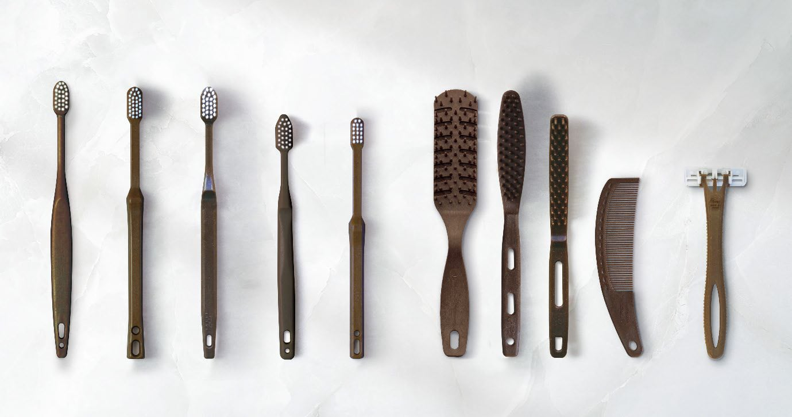
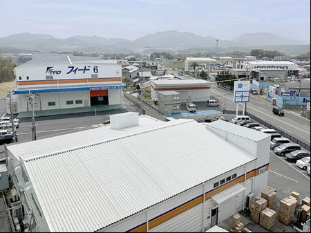

竹バイオマスと循環モデルで、未来をつなぐ
株式会社マイン（マイングループ）
株式会社マイン（マイングループ）
| 企業名 | 株式会社マイン（および製造会社 株式会社フィード、マイングループ） |
|---|---|
| 業種 | 宿泊施設向けアメニティ製品の企画・製造・販売 |
| 設立 | 1979年 |
| 所在地 | 福岡県遠賀郡遠賀町尾崎 |
～竹バイオマスと循環モデルで、未来をつなぐ～
北九州ネイチャーポジティブネットワークでは、地域経済の活性化と生物多様性の保全を両立する「ネイチャーポジティブ」の実現を目指し、企業による多様な取り組みを共有して参ります。
本記事では、ネットワーク参画企業である、株式会社マインとその製造会社である株式会社フィード（以下、マイングループ）による「北九州市の竹を活用したバイオマス製品の製造と循環型リサイクル」の取組をご紹介します。マイングループは、様々な苦労と試行錯誤を重ねながら、地元の放置竹林問題の解決に貢献してきた、まさにネイチャーポジティブ経営の模範となる企業です。
マインは、1979年に設立された企業で、宿泊施設向けのアメニティ製品の企画・製造・販売を中心に事業を展開しており、長年にわたり宿泊業界の「おもてなしの心」を支えてきました。
同社は、大量の使い捨てプラスチックを製造する企業としての責任と向き合い、北九州市の放置竹林問題という地域課題の解消を図りながらネイチャーポジティブ経営への移行を果たしました。その歩みは、「環境対応は単なるコスト増にしかならない」という固定観念を打ち破る先駆的な挑戦そのものです。

宿泊施設で日々大量に消費されるプラスチック製アメニティ。マイングループはその製造・供給に携わる中で、「環境に配慮すべき時代において、自社製品が環境負荷を生み出している現実」に対して深い葛藤を抱きました。この葛藤に真摯に向き合ったことが、ネイチャーポジティブ経営への第一歩となります。
その葛藤から、バイオマス原料への転換を検討する中で、特に着目したのが「竹」です。
竹は成長が速く再生可能性が高い反面、適切に管理されない放置竹林が全国各地で問題化しており、地元北九州市でも急増する竹林が土砂崩れなどのリスクをはらんでいました。
そこで、誰も本格的に実現できていなかった竹の製品原料化に挑戦を開始します。
竹素材の製品実用化は決して容易ではなく、研究・試作・品質管理には多くの試行錯誤と時間を要しました。また、従来のプラスチック製品に比べて単価が高くなることから、価格競争に直面するリスクも大きく、社内ではこの投資が将来の収益につながるかという不安もありました。
しかし、マインは「環境配慮こそが企業の未来価値を高める」と判断。強い信念のもと数年にわたりプロジェクトを継続した結果、遂に独自の技術開発に成功し実用化への道を開きました。
竹を使用した製品は従来製品よりも単価が上がりましたが、2022年のプラスチック資源循環促進法の成立により、徐々に環境配慮への熱意に賛同する大手ホテルなどの取引先が現れはじめ、その結果として販路の拡大に成功しました。全国チェーンの宿泊施設がこの製品に切り替え始めるなど、価格ではなく価値で選ばれる製品へと成長を遂げます。
こうした需要の喚起は、従来の環境対策とは異なり、サプライチェーン全体を巻き込んだネイチャーポジティブ経営への大きな流れを生み出しています。
マイングループは、2025年からは取引先施設と連携し、使用済み竹バイオマスアメニティを資源として買い取り、再生する循環型リサイクルを開始します。「販売→分別・回収→リサイクル原料化→製造」の４サイクルを自社拠点で一貫して行い、廃棄物削減とCO₂排出抑制を実現しています。
このように、単なる素材転換にとどまらず、ビジネスモデルそのものを「使い捨てしない」循環型に転換しており、環境負荷低減まで含めたまさにネイチャーポジティブの実践といえます。
これら一連の取組は、社員の意識や企業への誇りにも大きな変化をもたらしました。「環境対策に取り組む企業」として外部から高く評価されることで、社員のモチベーション向上につながり、企業価値の向上にも寄与しています。

マイングループは今後もバイオマス原料の竹含有率を更に高め、より環境負荷の小さい製品開発を進めております。このように、竹をプラスチックに代わる持続可能な素材として活用しながら、放置竹林問題の解消と里山環境の再生を進めていきます。
今後は、この循環を日本全国に広げて、自然資本を守り・回復させながら活用する「ネイチャーポジティブ経済」の実現に貢献していく方針です。
ネイチャーポジティブ経営は、単に環境配慮のための「コスト」ではなく、企業の未来価値を創造する投資として成立します。
マイングループの事例は、原料調達段階の「放置竹林の活用」から、製造工程での「減プラ」、そして将来的な「回収・リサイクル」まで、製品のライフサイクル全体を見据えた持続可能なビジネスモデルとなっており、特に、未利用資源である放置竹林の解消と、それによる地域貢献・生物多様性保全は、同社ならではの強みであり、環境と経済の好循環を生み出す重要な要素です。また、サプライチェーン全体に波及することで、単なる環境負荷の軽減に留まらない、社会全体の価値向上に貢献する事業であると言えます。
企業がネイチャーポジティブ経営に一歩踏み出す際のヒントとして、「課題意識→素材・技術への挑戦→循環型モデルの構築→理解と賛同の獲得」という同社の歩みは、非常に参考になりえると考えます。